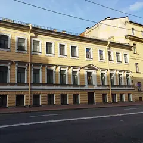

31 октября, воскресенье
Хэллоуин 2027 в Петербурге: куда сходить
В 2027 году Хэллоуин выпадает на воскресенье. Мы собрали 4 плана с подходящей атмосферой и 3 места — например, «В тишине», «Взаперти на Казанской» и «Взаперти на Соляном». Зови игрой на свидание или собери компанию голосованием.
- 4 плана
- 3 места
Планы с атмосферой 4

- В тишине · Иммерсивный музей · м. Чернышевская
- 10 минут пешкомDuo Gastrobar · Гастробар
Час без слов в интерактивном музее, где гиды общаются жестами, а потом 10 минут пешком — наговориться в гастробаре Duo.
Открыть план: Музей тишины и гастробарПозвать сюда: Музей тишины и гастробар
Фото здания: Vityavo, CC BY-SA 4.0 · Wikimedia Commons
- В тишине · Иммерсивный музей · м. Чернышевская
- 7 минут пешкомMindal Cafe · Кавказский ресторан
Музей, где гиды говорят жестами, а гости — без слов: у них есть формат для пар. После тишины — разговор за хинкали и мцвади в Mindal Cafe, 7 минут пешком.
Открыть план: Свидание в тишинеПозвать сюда: Свидание в тишине
Фото здания: Vityavo, CC BY-SA 4.0 · Wikimedia Commons
- Взаперти на Казанской · Квест · м. Невский проспект
- 6 минут пешкомBrewmen Taproom · Крафтовый бар
Хоррор с живыми актёрами у Казанского собора, а потом 6 минут пешком — тапрум Brewmen, чтобы выдохнуть и вспомнить, кто громче всех кричал.
Открыть план: Хоррор-квест и тапрумПозвать сюда: Хоррор-квест и тапрум
Фото: Vladimir Ivanov, общественное достояние · Wikimedia Commons
- Взаперти на Соляном · Квест · м. Чернышевская
- 15 минут пешкомBlackchops · Гастропаб
Киношные сюжеты на двух этажах квест-центра, а потом 15 минут пешком — стейки, бургеры и пиво в гастропабе у Фонтанки.
Открыть план: Квест у Чернышевской и мясной гастропабПозвать сюда: Квест у Чернышевской и мясной гастропаб
Места для Хэллоуина 3
Шпалерная ул., 26
Новое
Интерактивный музей, где гиды общаются жестами, а гости — без слов; есть формат «свидания в тишине» с мастер-классом.
Подробнее и маршрут: В тишинеПозвать сюда: В тишине
Фото здания: Vityavo, CC BY-SA 4.0 · Wikimedia Commons
Казанская ул., 7
Новое
Квест-центр у Казанского собора: хорроры с живыми актёрами и лаунж, где можно отметить победу после игры.
Подробнее и маршрут: Взаперти на КазанскойПозвать сюда: Взаперти на Казанской
Фото: Vladimir Ivanov, общественное достояние · Wikimedia Commons
Соляной пер., 8
Новое
Квест-центр у Чернышевской: сказочные и киношные сюжеты на двух этажах и лаунж, где удобно собраться компанией.
Подробнее и маршрут: Взаперти на СоляномПозвать сюда: Взаперти на Соляном
Как позвать
- Выбери план, место или событие — в карточке адрес, цены и маршрут в Яндекс Картах.
- Нажми «Позвать сюда» — соберётся приглашение-игра для свидания или голосование для компании.
- Отправь ссылку в любой мессенджер: тебе ответят, а компания отметит, куда и когда может. Бесплатно и без регистрации.